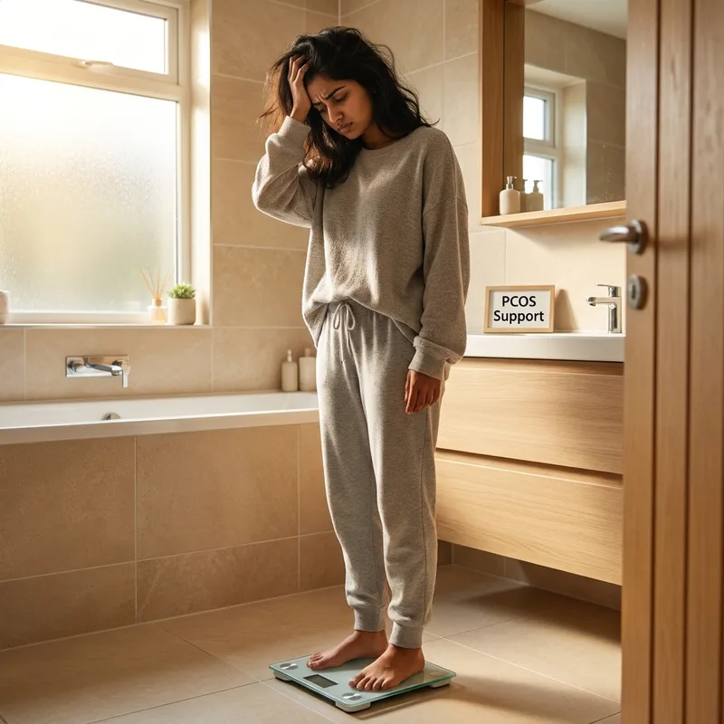
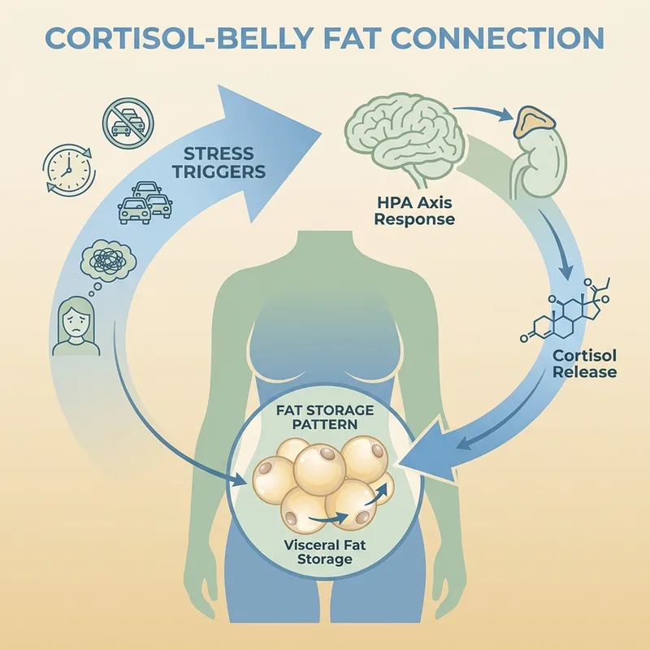
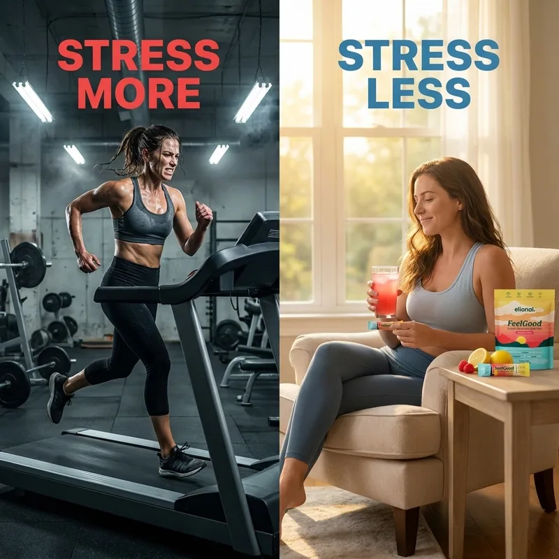
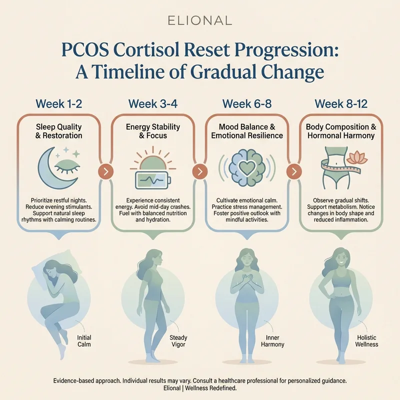

Break Free From the PCOS Cortisol Trap
- ✓ Clinical-dose KSM-66 ashwagandha (300mg)
- ✓ L-theanine (400mg) for calm without sedation
- ✓ Magnesium glycinate for sleep support
- ✓ 60-day money-back guarantee
60-Day Money-Back Guarantee · Made in UAE
If you have PCOS and can't lose that stubborn lower belly pooch despite doing "everything right," the problem isn't your willpower , it's your cortisol response working against you.

This one hits hard because we've been told exercise fixes everything. But if you have PCOS and you're already running on cortisol fumes, that extra HIIT class isn't burning fat , it's storing it.
When your HPA axis is already dysregulated from PCOS-related stress, intense workouts become another stressor your body can't recover from. Your cortisol spikes, stays elevated, and sends a direct signal to store fat around your midsection. The very thing you're doing to lose the belly is telling your body to keep it.

You've calculated your macros. You're eating 1,200 calories. You're doing everything the fitness influencers say. And your body is holding onto every ounce of belly fat like it's preparing for famine.
Because it is. When you have PCOS, your body already struggles with nutrient absorption and blood sugar regulation. Severe calorie restriction sends your cortisol through the roof as your body panics about survival. The result? Your metabolism slows, your belly fat increases, and you feel like you're fighting your own biology.

You've tried everything in the supplement aisle. Garcinia cambogia. Green tea extract. Generic fat burners that promise belly fat loss. None of them work because none of them understand PCOS.
PCOS belly fat isn't regular belly fat. It's hormonally-driven, cortisol-locked, and requires ingredients that specifically address the HPA axis dysfunction that comes with PCOS. Taking random weight loss supplements is like bringing a screwdriver to fix a watch , wrong tool, wrong outcome.

You're getting 5-6 hours of broken sleep and wondering why your belly won't budge. Sleep isn't optional when you have PCOS , it's when your body resets the cortisol rhythm that controls where fat gets stored.
Without adequate deep sleep, your cortisol never properly drops overnight. It stays elevated, signaling your body to store visceral fat and maintain that stubborn lower belly pouch. Every night of poor sleep is another day your body chooses fat storage over fat burning.
60-Day Money-Back Guarantee · Made in UAE
The cruel irony of PCOS: the more you stress about your belly fat, the more cortisol you produce. The more cortisol you produce, the more belly fat you store. It's a psychological trap that keeps you stuck in exactly the pattern you're trying to break.
Every time you look in the mirror with frustration, every time you feel defeated by the scale, every time you compare yourself to other women , you're feeding the cortisol cycle that's locking that fat in place. Your body doesn't know the difference between physical stress and emotional stress. It responds the same way: store more fat.
You've been told to "just lose weight" by doctors who don't understand that PCOS belly fat is hormonally-driven, not behaviorally-driven. You've been prescribed metformin and sent home without addressing the cortisol piece of your PCOS puzzle.
The truth is, most healthcare providers don't connect the dots between cortisol dysregulation and PCOS belly fat. They see PCOS as an ovarian disorder, not understanding that your adrenals are working overtime, flooding your system with stress hormones that directly contribute to that stubborn lower belly storage.
After years of failed diets, ineffective supplements, and doctors who don't get it, you've started to believe this is just how your body is. That PCOS belly fat is permanent. That you're destined to feel frustrated with your body forever.
But what if the problem wasn't that nothing works , but that you've been using tools designed for regular metabolism on a PCOS metabolism? What if there was a way to calm the cortisol response that's been sabotaging every effort you've made? What if your body has been waiting for the right signal to finally feel safe enough to let go of that stored belly fat?
60-Day Money-Back Guarantee · Made in UAE
Try FeelGood for two full months. If you don't notice calmer sleep, steadier energy, and positive changes in how your body feels, contact our support team for a full refund within 48 hours. No forms, no hoops, no questions asked.